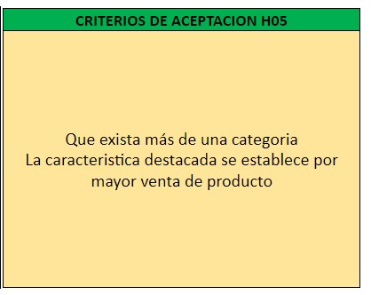
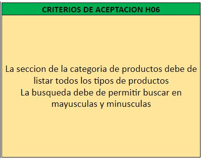
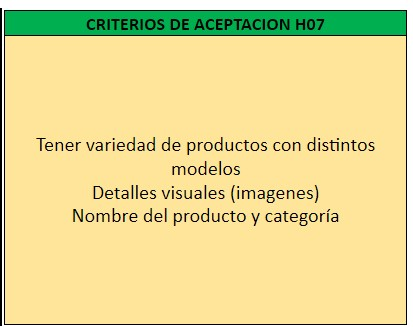
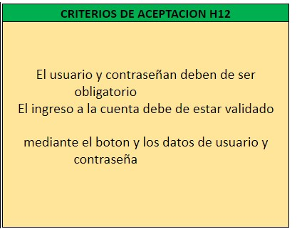

Kevin Pariona Trujillo
Producto Owner

Francisco Ocaña Jara
Scrum Master

Gloria Quispe Poma
Team Scrum

Marco Antonio Angulo Flores
Team Scrum

Alex David Palacios Gutierrez
Team Scrum
 |
 |
 |
 |
Los criterios de terminado son un conjunto de reglas que se aplican a todas las historias de usuarios,
es importante contar con una definición clara de terminado, ya que elimina la ambigüedad de los
requisitos y ayuda a que el equipo se apegue a las normas obligatorias de calidad.